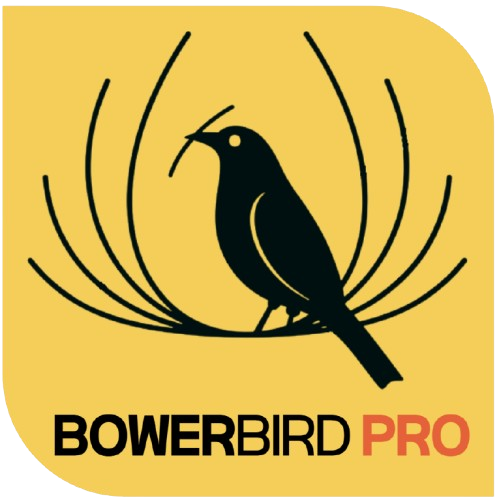

BOWERBIRD
PRO
Real-Time Data Logger & Plotter
실시간 게이지
데이터 분석 도구
Derivative
Integral
스무딩
Mov. Avg
Sav-Golay
5
이상치 제거
🔬 지능형 과학실 ON 전송
전송 시작
데이터 관리
CSV 저장하기
CSV 불러오기
바우어버드 프로 안내
브릭셀 에디터 바로가기
브릭셀 써킷 콘픽 바로가기
▼ 콘솔 로그
▼ 수신 데이터 로그
▼ 데이터 분석
Linear
Polynomial
Exponential
Power
Logarithmic
2nd
3rd
4th
5th
뷰포트
전체
차트를 드래그하여 구간을 선택하세요.
Y축
Y
min
Y
max
1s
10s
1m
5m
All
Auto
PNG